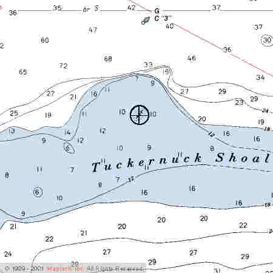

Link Index
MWDC
Home Page
Shipwrecks Page
Albert Galatin
Alice M. Colburn
Ardandhu
Barge and Crane
California
Charles S. Haight
Chelsea
Chester Poling
City of Salisbury
Corvan
Dixie Sword
Edward Rich
French Van Gilder
Henry Endicott
Herbert
Herman Winter
Hilda Garston
HMCS St. Francis
James Longstreet
John Dwight
Kershaw
Kiowa
Lackawanna
Lunet
Mars
Pemberton
Pendleton
Pinthis
Port Hunter
Pottstown
Romance
Seaconnet
Trojan
USS Grouse
USS New Hampshire
USS Triana
USS Yankee
USS YSD
Vineyard Sound
Lightship
|
Description: Schooner; 6 masted; Wood
Dimensions: length - 305.1 ft. , width - 48.2 ft. ; depth - 22.6 ft.
Tonnage: gross - 2230 , other - Draft - 3132
Propulsion: Sail
Machinery: Steam operated pumps; Ten horsepower generator.
Cargo: Empty
The Shipwreck
Date Sunk: December 5, 1914
Cause: Stranded
Location: Nantucket Sound, Tuckernuck Shoal
Coordinates: Latitude, 41o - 24' - 13"N Longitude,70o - 13' - 00"W
Loran:
The schooner struck the evening of December 5th "bound light" (without cargo) from Portland to Norfolk, probably to pick up a cargo of coal. Heavy seas soon opened her seams and she would have filled completely if not for her powerful steam operated pumps. Running almost constantly, it was all they could do to stem the rising flood.
The Revenue cutter Acushnet went to her assistance and would have pulled her off, if not for the fears of the schooner's Captain that she would fill with water and sink.
A wrecking tug from New London was soon alongside the schooner with hopes of refloating her. However the evening after she struck, 60 mph winds drove the schooner higher on the shoal and seas battered her heavily. Subsequent gales broke her back before local wreckers could attempt to refloat her.
Back to Top
Dive Site Conditions
Depth in feet: maximum - ; minimum -
Visibility in feet: average -
Click on the image to go to the MapTech Map Server,
for additional navigation information.

Back to Top
Historical Background
Constructed: year - 1906; where - Bath, Maine.
builder - Percy and Small.
Construction details: Built of White Oak and Yellow Pine; Galvanized iron and copper fastenings; 2 decks, full poop; Fitted with electric running lights, an 80 candlepower searchlight and 75 incandescent lights in her quarters and work areas.
Crew: 13 ; Master: Captain W.B. Wormell
Owners: J.S. Winslow & Company
Home or Hailing Port: Portland, Maine
Former Name(s), date(s):
Official number: 203715 Country: U.S.A.
Other Comments: The third of five, six-masted schooners built under contract for the J.S. Winslow Company of Portland Maine. The Alice M. Lawrence was rumored to have been the first American built schooner to be fitted with electric lights. Although that honor more likely belongs to a Rockland built vessel. In any case she was undoubtedly one of the first.
Back to Top
Salvage
December 14th; the schooner's crew, who had remained aboard since she grounded, abandoned their ship after stripping her. Back to Top
Sources:
Encyclopedia of American Shipwrecks; Berman, 1972
MapTech Mapserver
Merchant Vessels of the United States; Vessels Lost Chapter, 1915
New York Maritime Register; December 9, 16 & 23, 1914
The Maritime History of Bath Maine; Vol.II, Baker, 1973
The Record, "American Lloyds", American Bureau of Shipping; 1915
Back to Top
These files are under construction. Any information, specifically dive site related, would be greatfully appreciated.
Send comments to: Chris Hugo
Copyright © 2000 by Christopher C. Hugo
Massachusetts Board of Underwater Archaeological Resources
All Rights Reserved
|